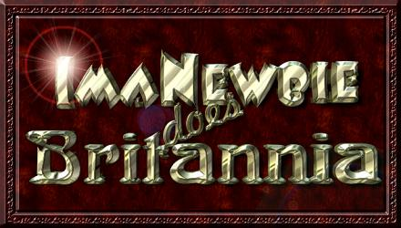

| Introduction | ...... | |
| The Main Characters | ...... | |
| Major Themes and Controversies | ...... | |
| The Toons | ...... | |
| The Britannia Enquirer | ...... | |
| Dictionary of UO/ICQspeak | ...... | |
| Tryon's Diablo Cartoon Page | ...... |
Note: The ImaNewbie toons were mostly created in a time when 800 X 600 was the average monitor resolution.
For that reason if you have a Hi-res Widescreen monitor you may find the toons look better if you shrink down
the width of your browser. Also, if the images seem small, then most web browsers (IE, Firefox, Chrome etc.)
support the use of (ctrl)(+) and (ctrl)(-) to enlarge or shrink the size of text and images in the browser window